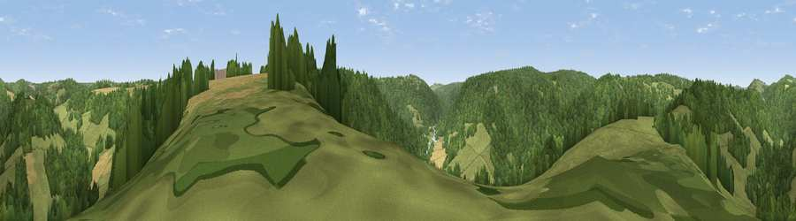

Viewpoint near Newland
#30736 in England · top 67% of its area beats it · near NewlandWhere it is
The exact computed spot (SO 54525 07325). Click the marker for map links.
The view, rendered

A 360° render of this exact spot computed from the terrain model, tree cover and land cover — summer colours, afternoon light, calibrated against photographs of famous viewpoints. Real trees, hedges and buildings will differ in detail.
The panorama
Grey silhouette: terrain skyline in each direction (720 bearings, Earth curvature and refraction included). Dashed green: skyline with trees (+15 m) and buildings (+8 m) as obstacles. Blue strip: how far the ground is visible on each bearing.
Where the view opens
Wedge length = distance to the farthest visible ground on that bearing (vegetation-aware). Rings at 10, 25 and 50 km.
What fills the view
58% woodland · 35% grassland · 6% cropland
Angular shares of the visible panorama (visual magnitude), not map area. Landscape diversity 0.38 (0–1 Shannon).
Key numbers
More beautiful places nearby
The staircase of upgrades: each row has a higher view potential than everything closer. Driving times are estimates from straight-line distance, calibrated against real road routing — check an actual route before setting out.
| Place | Direction | Drive | Score |
|---|---|---|---|
| Wyegate Hill | SSE · 1 km | ~4 min | 46.9 |
| Viewpoint near St Briavels | S · 4 km | ~8 min | 49.9 |
| Hart Hill | S · 4 km | ~10 min | 61.6 |
| Buck Stone | N · 5 km | ~11 min | 71.0 |
| Viewpoint near Welsh Newton | NNW · 10 km | ~19 min | 72.0 |
| Viewpoint near Goodrich | NNE · 12 km | ~22 min | 74.0 |
| Skenchill | NNW · 13 km | ~23 min | 75.8 |
| Chase Wood Hill | NNE · 16 km | ~29 min | 77.6 |
51.76275, -2.66032 · source: screening · position refined by local search. Computed location — check access rights before visiting.